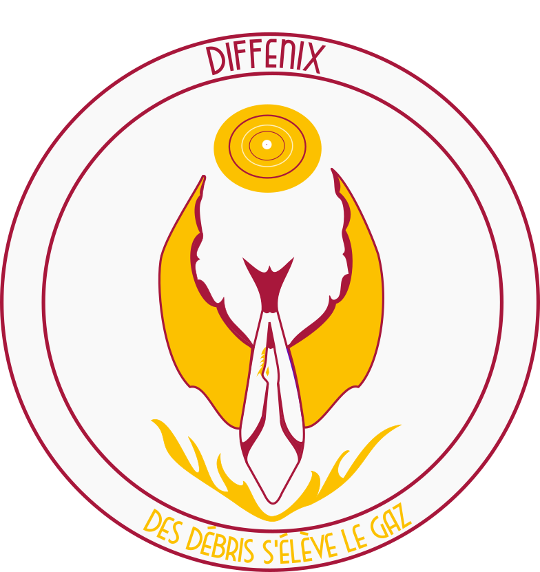
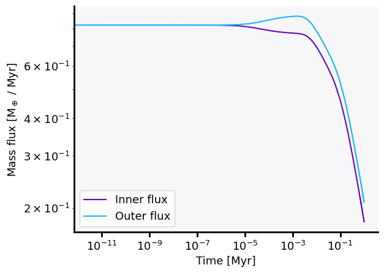
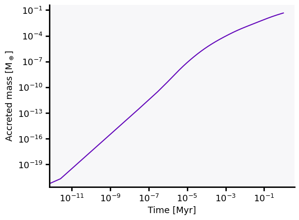

Welcome to Diffenix’s documentation!
This library provide tools to simulate the long term evolution of the gas in an axi-symetrical debris disc

Table of Contents




This library provide tools to simulate the long term evolution of the gas in an axi-symetrical debris disc

Table of Contents

